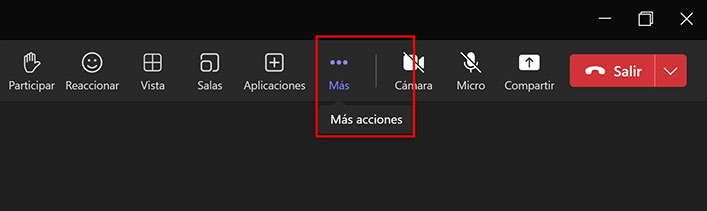
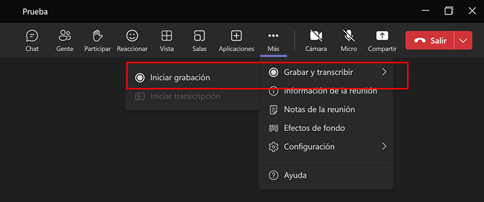
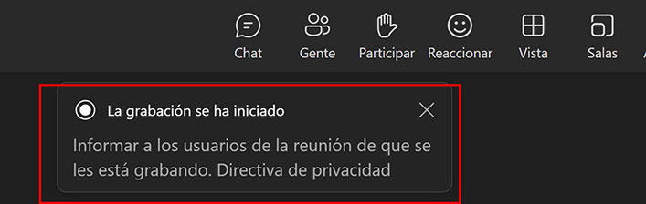
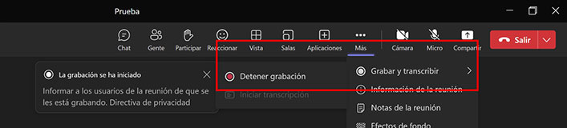
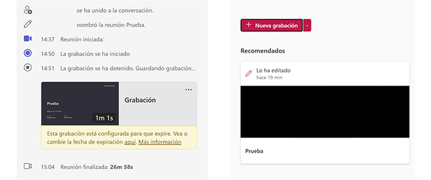
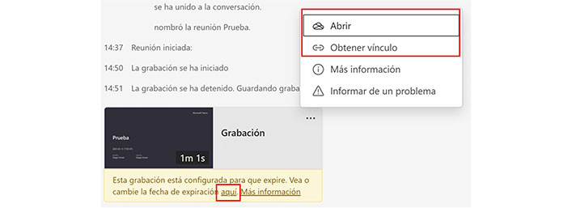

Grabar reuniones
Grabar tu reunión en Teams
- Iniciá o unite a una reunión.
- Dirigite a los controles de la reunión en la parte superior derecha. (los 3 puntitos horizontales). Hacé clic ahí y luego en la opción “Más acciones”. 
- Se va a desplegar un menú de opciones. Cliqueá “Grabar y transcribir” y luego “Iniciar grabación”. 
- Una vez iniciada la grabación, este proceso se notifica a todas las personas que forman parte de la reunión. 
- Para finalizar la grabación, se repite el mismo proceso de inicio. Esta vez aparecerá la opción “Detener grabación”. 
- La grabación puede quedar disponible en el mismo chat de la reunión y en la biblioteca de SharePoint de la persona que organizó la reunión. 
- Desde la grabación en el chat, cliqueando en los tres puntitos en el margen superior derecho, podés abrir el archivo o compartir el vínculo con otras personas. Los archivos tiene un tiempo de guardado limitado en la biblioteca. Podés extenderlo haciendo clic en el “aquí” de la parte inferior (amarilla). 
Grabar tu reunión en Webex
Limitá las distracciones y mantené la privacidad a tu alrededor usando un filtro borroso o cambiando el fondo durante su llamada o reunión. Podés reemplazar lo que se muestra detrás de usted con un fondo preestablecido o uno de los suyos propios.
Desde la PC
Hacé clic en Grabar y seleccioná la opción para tu PC y después Grabar.
Para la aplicación de Webex, andá al menú desplegable Opciones y seleccioná la opción para tu PC.
Una vez que finalice la reunión o el evento, la grabación se guardará ahí.
Pausar o detener la grabación
Cuando sea necesario, hacé clic en Grabar y realizá una de las siguientes acciones:
- Clic en Pausar y Reanudar para mantener una única grabación.
- Clic en Detener para finalizar la grabación actual.
Para reuniones o eventos que duran muchas horas, es buena idea realizar varias grabaciones para un tamaño de archivo más manejable y una visualización más fácil.
Ubicación de la grabación
Cuando grabás una reunión en tu PC, podés elegir dónde guardar la reunión o directamente hacerlo en la ruta predeterminada:
- Para Windows: A las grabaciones iniciadas desde una reunión se
pueden acceder desde la carpeta Documentos de Mi PC.
Guardá siempre las grabaciones en una carpeta. No se recomienda guardar grabaciones en la ubicación de un archivo de red. La reproducción de grabaciones desde la ubicación de un archivo de red no es compatible. - Para Mac: A las grabaciones iniciadas desde dentro de una reunión se puede acceder desde la carpeta Inicio mediante Finder.
Para reuniones o eventos que duran muchas horas, es buena idea realizar varias grabaciones para un tamaño de archivo más manejable y una visualización más fácil.
Desde la nube
Grabá reuniones y eventos en la nube para acceder fácilmente o compartirlas
Como anfitrión o cohost de una reunión, podés grabar reuniones en la nube. Incluyen el audio, vídeo y todo lo que se comparte durante la reunión. Como asistente no podés grabarlas. Pedile al host que lo haga y luego te comparta la grabación.
Ubicación de la grabación
Cuando la grabación esté lista, se guarda en el sitio de Webex. El anfitrión de la reunión puede acceder y compartirla con el cohost o con cualquier otra persona que la necesite. El host también recibe un correo electrónico con todos los detalles para compartir y reproducir la grabación.
Si tu reunión está asociada con un espacio, el enlace de la grabación aparece automáticamente en el espacio donde tuvo lugar la reunión. Todas las personas del espacio son tratados como el anfitrión y pueden acceder a la grabación.
Configuración de grabación
Podés seleccionar el diseño de pantalla predeterminado para tus grabaciones para que se ajusten al formato y al contenido de tu reunión o evento. También está la opción de grabar una transcripción de lo que se dijo durante la reunión.
- Hacé clic en Grabar y seleccioná la opción de la nube.
Para la Aplicación Webex, andá al menú desplegable Opciones y seleccioná sla opción correspondiente a la nube.
Si no ves el botón Grabar, buscalo en Más opciones. - Nuevamente, hacé clic en Grabar.
- Elegí los diseños de grabación si querés que sean diferentes a tus preferencias predeterminadas.
- Cuando sea necesario, hacé clic en Grabar y realizá alguna de las
siguientes acciones:
- Clic en Pausar y Reanudar para mantener una única grabación.
- Clic en Detener para finalizar la grabación actual.